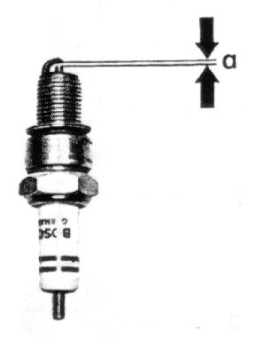

Check the
spark plug electrode gap
with spark plug gage
every 3000 miles
and before installing new spark plugs.
If necessary, adjust the gap to the specified size of a = 0.024 + 0.004"
by bending the side electrode.
Figure 44
Do not clean spark plugs with a metal brush, -- apply a graphite lubricant
to the threads before screwing the plug into the cylinder head.
It is a good practice to replace the
spark plugs every 10000 miles.
44
